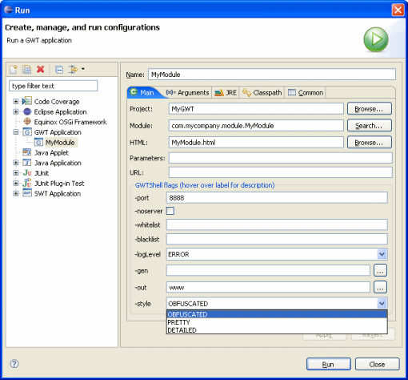

GWT Application launch configuration
- Select Project and Module class
- Select HTML file
- Specify Parameters to pass to GWT Shell
- Specify URL to pass to GWT Shell (leave blank to use the
default)
- Specify various GWTShell flags
- -port: Runs an embedded Tomcat instance on the
specified port (defaults to 8888)
- -noserver: Prevents the embedded Tomcat server
from running, even if a port is specified
- -whitelist: Allows the user to browse URLS that
match the specified regexes (comma or space separated)
- -blacklist: Prevents the user browsing URLS that
match the specified regexes (comma or space separated)
- -loglevel: The level of logging detail: ERROR,
WARN, INFO, TRACE, DEBUG, SPAM, or ALL
- -gen: The directory into which generated files
will be written for review
- -out: The directory to write output files into
(defaults to current)
- -style: Script output style: OBFUSCATED, PRETTY,
or DETAILED (defaults to OBFUSCATED)
- Click Run
 |